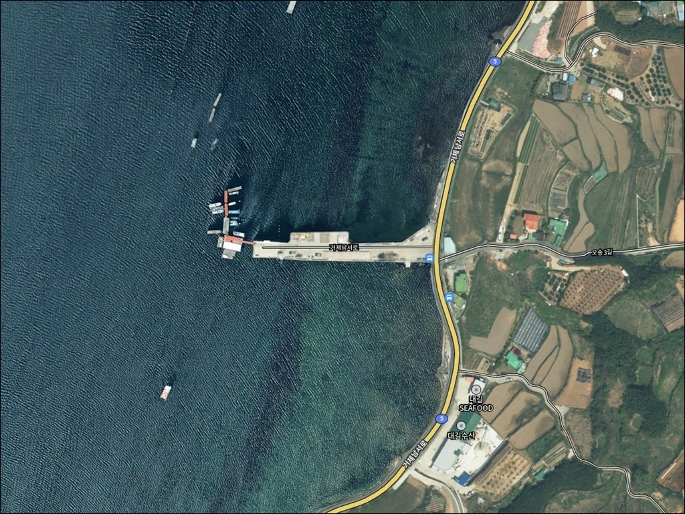
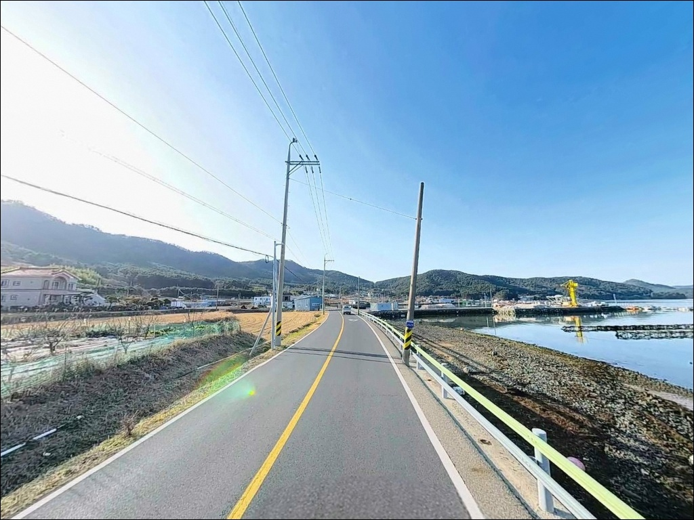
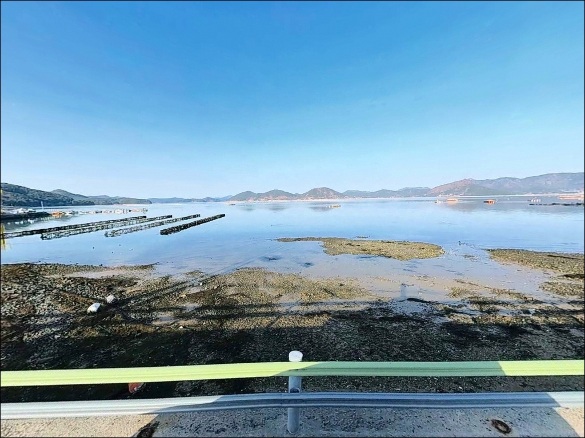
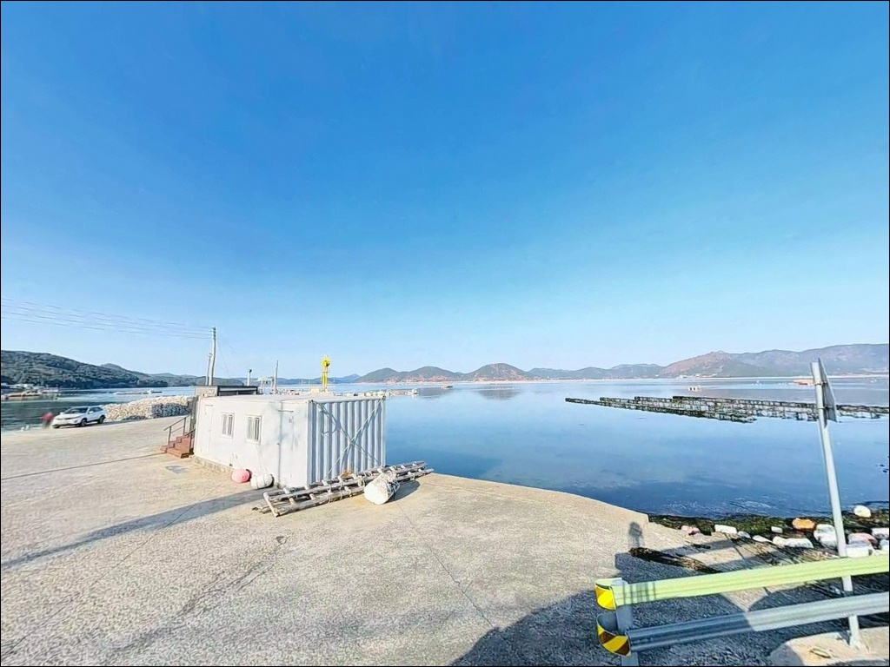
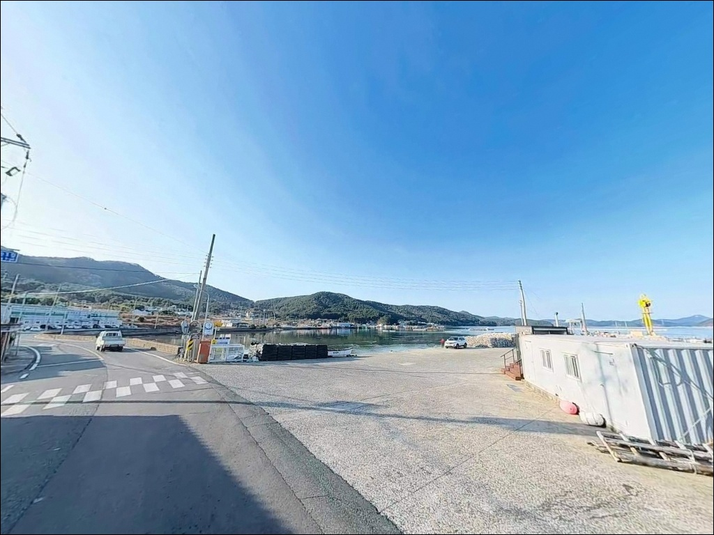
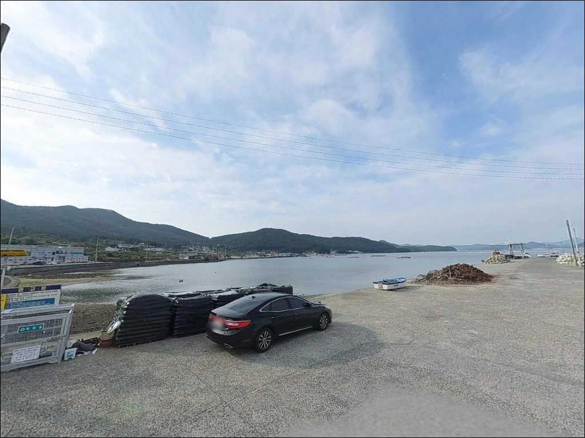
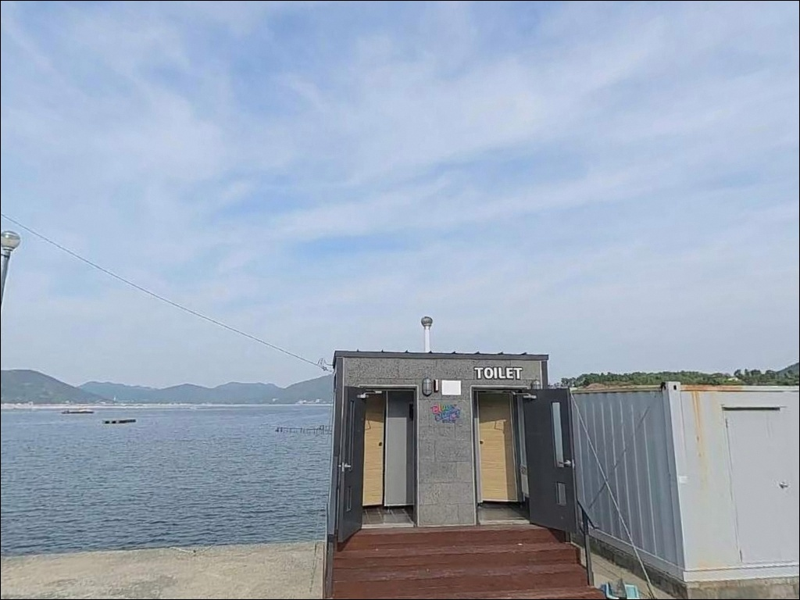
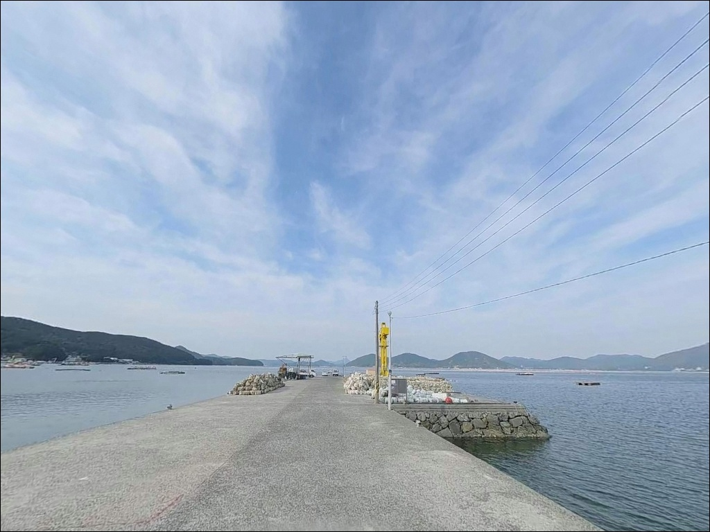
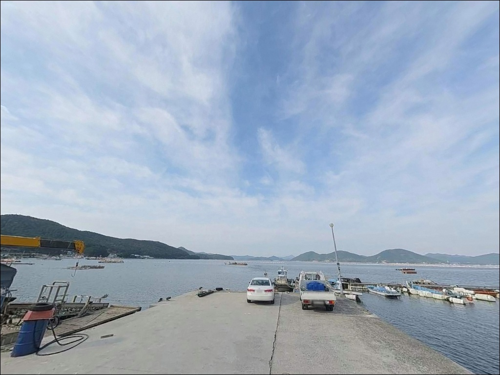

간조에 가면 갯벌만 드러나는 영북선착장, 중들물 만조에 맞춘 원투낚시
이 페이지에는 광고(제휴 링크 포함)가 있으며, 광고 링크를 통해 구매하면 운영자가 판매 수익 또는 수수료를 받을 수 있습니다. 포인트 사진: 카카오맵 스카이뷰·로드뷰. 이 페이지의 지도·사진 이미지는 카카오맵의 실제 서비스 이미지와 다를 수 있습니다.


포인트 안내
영북선착장
경남 거제시 동부면 오송리 438-17
간조 시간대에 맞춰 영북선착장에 도착하면
선착장 전면이 갯벌로 드러나
어떤 채비를 써도 낚시 자체가 불가능해집니다.
거제만 내만 특성상 물이 많이 빠지는 구조라,
물때 판단이 이 포인트 방문의 첫 번째 조건입니다.
산달도를 마주보는 거제만 안쪽에 자리한
영북선착장은 외해 파도와 직접 맞닿지 않는
반폐쇄형 내만 구조의 소형 선착장입니다.
수심은 얕지만 조류가 완만하고
바람 영향이 적어,
원투낚시와 찌낚시 중심의 조용한 연안 포인트로
운용하기에 어울리는 구조를 갖추고 있습니다.
이 글은
영북선착장의 진입 여건, 차박 환경,
내만 지형 기반 낚시 방식 적합성에 집중합니다.
조황 단정이나 특정 어종 보장은
이 글의 범위에 포함되지 않습니다.

1. 진입 동선과 포인트 접근성
영북선착장으로의 진입은
거제면에서 동부면 방면으로 이어지는
1018번 지방도를 이용한 뒤,
오송리·영북마을 방면의 좁은 안길로
꺾어 들어가는 방식입니다.
마을 진입로 구간은 포장이 되어 있으나
폭이 1.5차선 이하로 좁아지는 구간이
포함되어 있습니다.
승용차 기준으로는 진입에 큰 어려움은 없지만,
대형 SUV나 캠핑 장비를 갖춘 차량은
출발 전 위성지도로 경로를 먼저 확인해두는 편이
현장에서 당황하는 일을 막습니다.
회차는 선착장 주변 소규모 공터에서 가능하지만
진입 전 경로 확인을 생략하면 후진 진출이 불가피한
상황이 생길 수 있습니다.
주차는 선착장 옆 공터 1~2대 수준으로
공간이 매우 협소합니다.
어민 작업 동선과 겹치지 않는 자리를
먼저 확인하고 주차하는 것이
기본 매너입니다.

2. 차박 환경과 야간 체류 여건
영북마을은 인구가 적은 조용한 어촌 마을로
야간 차량 통행이 거의 없습니다.
민가와 선착장이 바로 인접한 구조라
완전 고립형과는 거리가 있고,
마을 생활권과 맞닿은 스텔스형 차박에
어울리는 환경입니다.
가로등은 마을 입구 구간까지만 설치된
수준으로 판단되며,
선착장 끝단 조명은 기대하기 어렵습니다.
야간 출조 시 헤드랜턴은 필수이고,
간조 시 갯벌이 드러나는 구간에서는
발밑 미끄럼 위험이 높아지므로
이동 동선을 낮에 미리 파악해두는 것이 좋습니다.
주차 공간이 협소하고 민가가 바로 붙어 있어
차박을 메인으로 삼기보다는
낚시 후 조용히 하룻밤 머무는 용도로
접근하는 편이 현실적입니다.
야간 소음과 조명은 인근 주민의 생활에
직접적인 영향을 줄 수 있으므로
최소 소음·최소 불빛 운영이 기본 조건입니다.


3. 주변 편의시설 및 인프라 현황
영북선착장 반경 3km 이내에는
편의점이나 마트를 기대하기 어렵습니다.
거제시 동부면사무소 인근의
편의시설까지 차로 약 8~10분 거리이며,
식수·얼음·낚시 소품·연료는 출발 전
완비하고 진입하는 것이 현실적인 준비 방식입니다.
선착장 바로 인근(438-16)에
간이화장실이 확인됩니다.
영월선착장(영북항) 명칭으로 등록된
소재지 기준의 시설로,
이용 가능 여부는 현장에서 직접 확인하는 편이
확실합니다.
반경 5km 권역으로 이동하면
거제 식물원(정글돔) 방면의
거제면 소재지가 있어
식사와 기본 보급이 가능합니다.
포인트 인근에서 부족한 소품이 생겼다면
이 동선이 가장 가까운 대안입니다.

낚시 포인트 방문 전 반드시 확인할 사항
영북선착장에서 가장 먼저 확인할 것은
물때입니다.
거제만 내만 특성상 간조 시에는
선착장 전면 갯벌이 드러나
채비를 던질 수 있는 수심 자체가
확보되지 않습니다.
바다타임에서 오송리 기준 물때를 확인하고,
중들물에서 만조 전후 타이밍을
기준으로 출발 시각을 잡는 것이
이 포인트 방문의 기본 전략입니다.
거제만 일대는 굴 양식장이 분포한 해역입니다.
선착장 외측으로 양식장 부표가 있을 수 있으니,
캐스팅 방향에서 줄이 걸리지 않도록
사전에 주변 지형을 파악하는 것이 좋습니다.
마을 선착장 구조상 이른 새벽과
오전 조업 귀항 시간대에는
어선 이동이 있을 수 있습니다.
선착장 접안 공간을 가로막지 않는 자리를
먼저 확인하고 낚시 자리를 잡는 것이
기본 매너이며, 야간에는
구명조끼와 헤드랜턴을 반드시 챙겨야 합니다.

5. 지형 기반 낚시 여건 분석
영북선착장은 거제만 내만의 반폐쇄형 지형 안에
위치하고 있습니다.
외해와 직접 맞닿지 않는 구조라
조류는 1노트 이하로 완만하게 흐르며,
파도 영향도 거의 받지 않는 편입니다.
선착장 전면 바닥은 펄과 모래가 혼합된
평탄한 구조로, 밑걸림이 적어
채비 손실 없이 바닥을 노릴 수 있습니다.
수심은 선착장 전면 기준 1~2m 내외로 얕은 편이며,
외측 수로 방향으로 원투할 경우
수심이 다소 확보되는 구조입니다.
단, 간조 시에는 물이 많이 빠져
갯벌이 드러나는 지형 특성상
중들물 이후 만조 사이의 시간대가
낚시 가능 조건을 결정합니다.
거제 동부면 오송리 일대는
노래미, 도다리, 볼락, 학공치 같은
연안 어종이 혼재하는 남해 내만 전형 패턴의 해역입니다.
영북선착장의 지형 조건에서
기대해 볼 수 있는 어종도
이 패턴의 범위 안에서 판단하는 것이 맞습니다.
출조 전 거제 동부면 오송리 일대 조황 검색을
먼저 해보시는 편이 좋습니다.


6. 포인트에 어울리는 낚시 스타일
이 포인트에서 가장 잘 맞는 낚시는
원투낚시입니다.
펄과 모래가 혼합된 평탄한 바닥 구조는
밑걸림 없이 채비를 깔끔하게 올릴 수 있는
조건이며,
50~80m 이내 투척으로 외측 수로 방향을
노리는 방식이 이 포인트 지형에 맞습니다.
청갯지렁이나 홍갯지렁이 미끼로
도다리(봄철)·노래미 계열을 기대해 볼 수 있는
바닥 조건을 갖추고 있습니다.
조류가 약하고 수심이 얕은 내만 구조는
민장대 또는 릴찌낚시에도 어울립니다.
부력이 작은 막대찌나 소형 구멍찌로
내만 방향을 천천히 흘려보내는 방식이 유효하며,
조금 물때 전후 조류가 느려지는 타이밍에
입질이 살아나는 경향이 있습니다.
볼락 라이트게임도 노려볼 수 있습니다.
선착장 호안 발밑과 주변 석축 구간을
대상으로,
소형 지그헤드 2~3g에 그럽웜을 달아
가볍게 탐색하는 방식이 기본입니다.
야간보다 해 질 녘 직후 시간대에
갯벌 노출 구간의 발밑 안전을 확인하면서
운용하는 편이 실용적입니다.

7. 대안 포인트와 플랜 B 동선
영북선착장 물때가 맞지 않거나
주차 여건이 여의치 않을 때는
가배마을 방파제가 첫 번째 대안입니다.
해안선 기준 약 2~3km 거리로,
같은 동부면 내만 해역에 위치하며
수심과 저질 조건이 영북선착장과 유사합니다.
발판이 더 안정적이고 조류 조건도 비슷해
플랜 B로 묶어두기 좋은 포인트입니다.
동부면과 남부면 경계 인근의
쌍근항도 대안으로 묶어볼 수 있습니다.
약 6~7km 거리로 조금 더 이동해야 하지만,
방파제 길이가 있고 외항 노출 구조라
수심이 더 깊어 원투와 찌낚시 모두
폭넓게 운용 가능한 환경을 갖추고 있습니다.
반경 10km권으로는 함박금방파제와
오송리 일대의 방파제 포인트들이
대안 후보로 분포합니다.
차박 조건이 더 넓은 공간을 원한다면
가배항 물량장 방면(약 6km)이
주차 공간과 포인트 여건을 함께 갖춘
현실적인 선택지입니다.

잔잔한 내만에서
조용히 낚싯대를 올리고 싶은 분께
빠른 조류나 외해 파도보다
조용한 내만에서 원투낚시로
바닥을 천천히 탐색하는 방식을 즐긴다면
영북선착장의 지형 조건은 잘 맞는 구조입니다.
거제만 내측이라 바람 영향이 적고
낚시 동작 자체가 편한 편이어서,
초행 포인트 탐색 차원에서
들러보기에 적합한 규모의 선착장입니다.
반면 물때 판단을 건너뛰고 방문하면
선착장 전면이 갯벌로 드러난 상태를
마주칠 수 있습니다.
편의시설도 반경 3km 이내에는
기대하기 어렵고, 주차 공간도
1~2대 수준으로 협소합니다.
물때 확인, 소형 차량 기준 진입 판단,
완전 자급 준비 — 이 세 가지를 갖추고 가면
거제 내만의 조용한 연안낚시를
부담 없이 즐길 수 있는 포인트입니다.
낚시를 마치고 마을 분위기와 어울리게
조용히 하룻밤 머무는 차박 여행자라면,
민가 인접형 스텔스 차박 운영 방식으로
낚시와 숙박을 함께 즐기기에
나쁘지 않은 선택지입니다.